d <- tibble(n1=rnorm(n = ??, mean = ??, sd = ??))
head(d)Stats Bootcamp - class 11
Distributions and summary stats
Learning objectives
Learn types of variables
Calculate and visualize summary statistics
Properties of data distributions
Central limit theorem
Quantitative Variables
Discrete variable: numeric variables that have a countable number of values between any two values - integer in R (e.g., number of mice, read counts).
Continuous variable: numeric variables that have an infinite number of values between any two values - numeric in R (e.g., normalized expression values, fluorescent intensity).
Categorical Variables
Nominal variable: (unordered) random variables have categories where order doesn’t matter - factor in R (e.g., country, type of gene, genotype).
Ordinal variable: (ordered) random variables have ordered categories - order of levels in R ( e.g. grade of tumor).
Distributions and probabilities
A distribution in statistics is a function that shows the possible values for a variable and how often they occur.
We can visualize this with a histogram or density plots as we did earlier.
We are going to start with simulated data and then use Palmer Penguins later.
Create a normal distribution
Assume that the test scores of a college entrance exam fits a normal distribution. Furthermore, the mean test score is 76, and the standard deviation is 13.8.
Visualize a normal distribution
first we will look at a histogram n1
ggplot(data = ??,
aes(x=??)
) +
geom_??() +
theme_cowplot() next a density plot
ggplot(data = d,
aes(x=n1)
) +
geom_??() +
geom_vline(xintercept = ??) + # draw mean
theme_cowplot() Determine the probability of a given value
Probability is used to estimate how probable a sample is based on a given distribution.
Probability refers to the area under curve (AUC) on the distribution curve. The higher the value, the more probable that the data come from this distribution.
What is the probability of students scoring 85 or more in the exam?
s <- 85
pnorm(??, mean=76, sd=13.8, lower.tail = F) . . .
What is the probability of students scoring 85 or less in the exam?
pnorm(s, mean=76, sd=13.8, lower.tail = T) Prob of 85 or more is equivalent to the area under the curve to the right of 85.
ggplot(data = d,
aes(x=n1)
) +
geom_density() +
geom_vline(xintercept = s) +
theme_cowplot() Determine the likelihood of a given value
Likelihood is used to estimate how good a model fits the data. Likelihood refers to a specific point on the distribution curve. The lower the likelihood, the worse the model fits the data.
What is the likelihood of students scoring 85 on the exam?
l <- dnorm(s, mean=76, sd=13.8)
lThe likelihood is the y-axis value on the curve when th x-axis = 85.
ggplot(data = d,
aes(x=n1)
) +
geom_density() +
geom_vline(xintercept = s) +
geom_hline(yintercept = l) +
theme_cowplot() Now to real (messy!) data
We will use the Palmer Penguins dataset
penguins_raw # A tibble: 344 × 17
studyName `Sample Number` Species Region Island Stage `Individual ID`
<chr> <dbl> <chr> <chr> <chr> <chr> <chr>
1 PAL0708 1 Adelie Penguin… Anvers Torge… Adul… N1A1
2 PAL0708 2 Adelie Penguin… Anvers Torge… Adul… N1A2
3 PAL0708 3 Adelie Penguin… Anvers Torge… Adul… N2A1
4 PAL0708 4 Adelie Penguin… Anvers Torge… Adul… N2A2
5 PAL0708 5 Adelie Penguin… Anvers Torge… Adul… N3A1
6 PAL0708 6 Adelie Penguin… Anvers Torge… Adul… N3A2
7 PAL0708 7 Adelie Penguin… Anvers Torge… Adul… N4A1
8 PAL0708 8 Adelie Penguin… Anvers Torge… Adul… N4A2
9 PAL0708 9 Adelie Penguin… Anvers Torge… Adul… N5A1
10 PAL0708 10 Adelie Penguin… Anvers Torge… Adul… N5A2
# ℹ 334 more rows
# ℹ 10 more variables: `Clutch Completion` <chr>, `Date Egg` <date>,
# `Culmen Length (mm)` <dbl>, `Culmen Depth (mm)` <dbl>,
# `Flipper Length (mm)` <dbl>, `Body Mass (g)` <dbl>, Sex <chr>,
# `Delta 15 N (o/oo)` <dbl>, `Delta 13 C (o/oo)` <dbl>, Comments <chr>. . .
Yikes! Some of these column names have horrible formatting e.g. spaces, slashes, parenthesis. These characters can be misinterpreted by R. Also, long/wonky names makes coding annoying.
Let’s tidy the names
penguins_raw |> colnames() [1] "studyName" "Sample Number" "Species"
[4] "Region" "Island" "Stage"
[7] "Individual ID" "Clutch Completion" "Date Egg"
[10] "Culmen Length (mm)" "Culmen Depth (mm)" "Flipper Length (mm)"
[13] "Body Mass (g)" "Sex" "Delta 15 N (o/oo)"
[16] "Delta 13 C (o/oo)" "Comments" . . .
janitor package to the rescue.
. . .
. . .
Create a new object pen that has nice clean variable names. And get rid of any variable that is the same for all observations (not useful).
pen <- penguins_raw |>
clean_names() |>
janitor::remove_constant()Let’s inspect the data
pen |>
str()tibble [344 × 15] (S3: tbl_df/tbl/data.frame)
$ study_name : chr [1:344] "PAL0708" "PAL0708" "PAL0708" "PAL0708" ...
$ sample_number : num [1:344] 1 2 3 4 5 6 7 8 9 10 ...
$ species : chr [1:344] "Adelie Penguin (Pygoscelis adeliae)" "Adelie Penguin (Pygoscelis adeliae)" "Adelie Penguin (Pygoscelis adeliae)" "Adelie Penguin (Pygoscelis adeliae)" ...
$ island : chr [1:344] "Torgersen" "Torgersen" "Torgersen" "Torgersen" ...
$ individual_id : chr [1:344] "N1A1" "N1A2" "N2A1" "N2A2" ...
$ clutch_completion: chr [1:344] "Yes" "Yes" "Yes" "Yes" ...
$ date_egg : Date[1:344], format: "2007-11-11" "2007-11-11" ...
$ culmen_length_mm : num [1:344] 39.1 39.5 40.3 NA 36.7 39.3 38.9 39.2 34.1 42 ...
$ culmen_depth_mm : num [1:344] 18.7 17.4 18 NA 19.3 20.6 17.8 19.6 18.1 20.2 ...
$ flipper_length_mm: num [1:344] 181 186 195 NA 193 190 181 195 193 190 ...
$ body_mass_g : num [1:344] 3750 3800 3250 NA 3450 ...
$ sex : chr [1:344] "MALE" "FEMALE" "FEMALE" NA ...
$ delta_15_n_o_oo : num [1:344] NA 8.95 8.37 NA 8.77 ...
$ delta_13_c_o_oo : num [1:344] NA -24.7 -25.3 NA -25.3 ...
$ comments : chr [1:344] "Not enough blood for isotopes." NA NA "Adult not sampled." ...
- attr(*, "spec")=
.. cols(
.. studyName = col_character(),
.. `Sample Number` = col_double(),
.. Species = col_character(),
.. Region = col_character(),
.. Island = col_character(),
.. Stage = col_character(),
.. `Individual ID` = col_character(),
.. `Clutch Completion` = col_character(),
.. `Date Egg` = col_date(format = ""),
.. `Culmen Length (mm)` = col_double(),
.. `Culmen Depth (mm)` = col_double(),
.. `Flipper Length (mm)` = col_double(),
.. `Body Mass (g)` = col_double(),
.. Sex = col_character(),
.. `Delta 15 N (o/oo)` = col_double(),
.. `Delta 13 C (o/oo)` = col_double(),
.. Comments = col_character()
.. )Let’s select a few of these columns to keep and get rid of NAs
p <- pen |>
select(species, island, culmen_length_mm, flipper_length_mm, body_mass_g, sex) |>
drop_na(). . .
clean species names
unique(p$species)[1] "Adelie Penguin (Pygoscelis adeliae)"
[2] "Gentoo penguin (Pygoscelis papua)"
[3] "Chinstrap penguin (Pygoscelis antarctica)"p <- p |>
mutate(species = str_remove(species, pattern = " [P|p]en.*")
)Visualizing quantitative variables
histogram of body mass
ggplot(data = ??,
aes(x=??)
) +
geom_histogram() +
theme_cowplot()density plot of body mass
ggplot(data = p,
aes(x=body_mass_g)
) +
geom_??() +
theme_cowplot()Visualizing categorical variables
barplot - 1 category
ggplot(data = p, aes(x = island, fill = island)) +
geom_bar() +
theme_cowplot()barplot - categories (island vs sex)
stacked:
ggplot(data = p, aes(x = island, fill = sex)) +
geom_bar() +
theme_cowplot()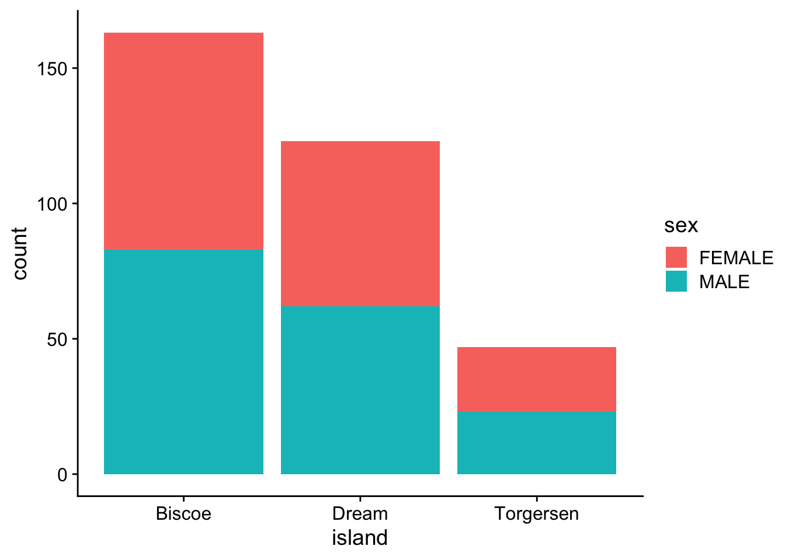
proportion
ggplot(data = p, aes(x = island, fill = sex)) +
geom_bar(position = "fill") +
theme_cowplot()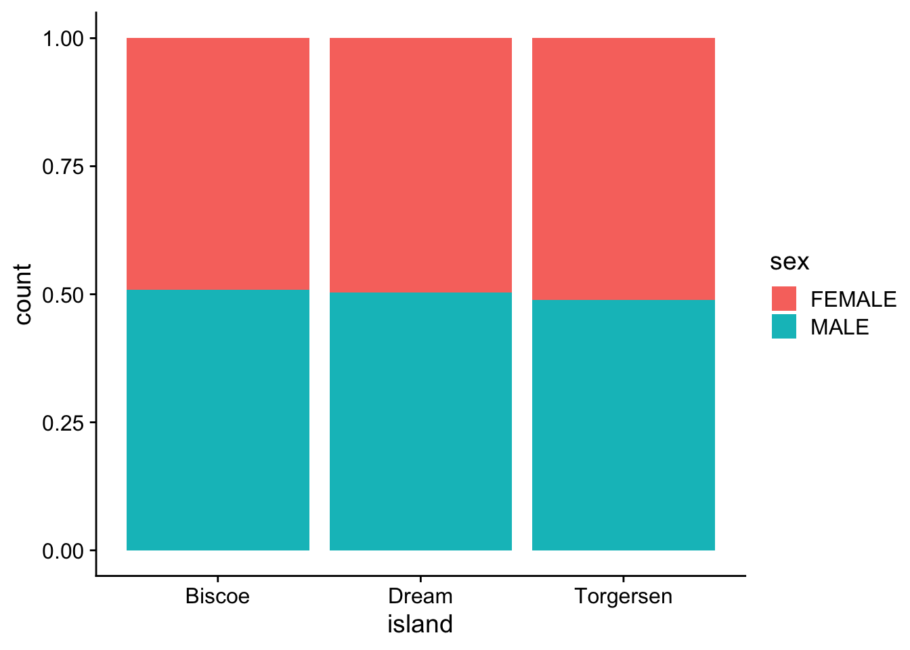
per category
ggplot(data = p, aes(x = island, fill = sex)) +
geom_bar(position = "dodge") +
theme_cowplot()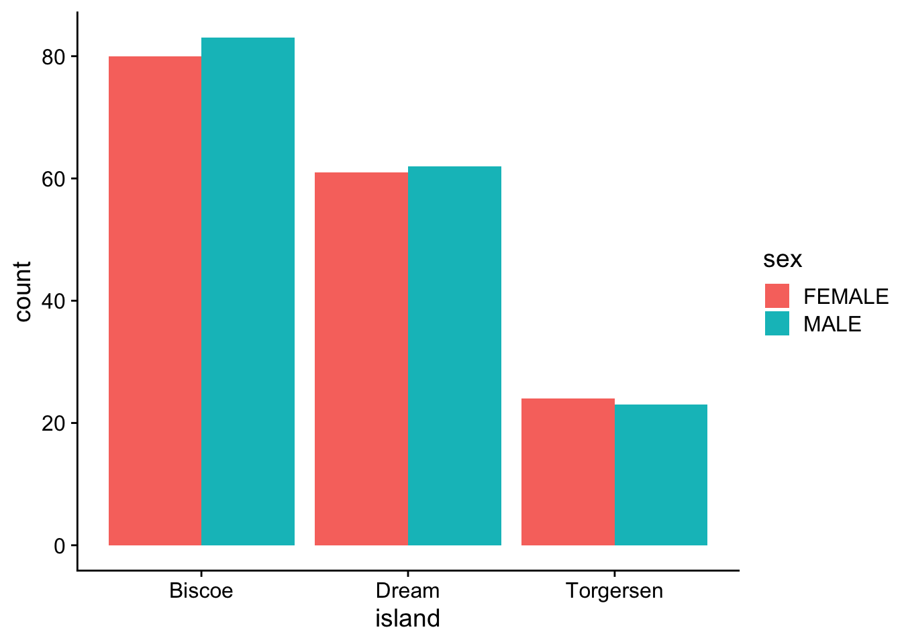
Descriptive statistics for continuous data
n: # observations/individuals or sample sizemean (\(\mu\)): sum of all observations divided by # of observations, \(\mu = \displaystyle \frac {\sum x_i} {n}\)
-
median: the “middle” value of a data set. Not as sensitive to outliers as the mean.

Descriptive statistics for body weight
Let’s look at the distribution again
ggplot(data = p,
aes(x=body_mass_g)
) +
geom_density() +
theme_cowplot(). . .
n
length(p$body_mass_g)[1] 333. . .
mean
mean(p$body_mass_g)[1] 4207.057. . .
median
median(p$body_mass_g)[1] 4050viz mean + median
ggplot(data = p,
aes(x=body_mass_g)
) +
geom_density() +
# geom_vline() +
# geom_vline() +
theme_cowplot()
Other descriptive statistics
Min: minimum value.
Max: maximum value.
q1, q3: the first and the third quartile, respectively.
IQR: interquartile range measures the spread of the middle half of your data (q3-q1).
Quick way to get all these stats:
p |>
get_summary_stats(body_mass_g, type = "common")# A tibble: 1 × 10
variable n min max median iqr mean sd se ci
<fct> <dbl> <dbl> <dbl> <dbl> <dbl> <dbl> <dbl> <dbl> <dbl>
1 body_mass_g 333 2700 6300 4050 1225 4207. 805. 44.1 86.8. . . get mean, median
p |>
get_summary_stats(body_mass_g,
show = c("??","??")
) Statistics describing spread of values
Variance: the average of the squared differences from the mean
\(\sigma^2 = \displaystyle \frac {\sum (x_{i} - \mu)^2}{n}\)
Standard Deviation: square root of the variance
\(\sigma = \sqrt {\displaystyle \frac {\sum (x_{i} - \mu)^2}{n}}\)
The variance measures the mathematical dispersion of the data relative to the mean. However, it is more difficult to apply in a real-world sense because the values used to calculate it were squared. The standard deviation, as the square root of the variance, is in the same units as the original values, which makes it much easier to work with and interpret w/respect to the mean.
Other stats describing spread of data
Confidence Interval (ci): a range of values that you can be 95% (or x%) certain contains the true population mean. Gets into inferential statistics.

Get more descriptive stats easily
p |>
get_summary_stats(body_mass_g, show = c("mean","median","sd")) # A tibble: 1 × 5
variable n mean median sd
<fct> <dbl> <dbl> <dbl> <dbl>
1 body_mass_g 333 4207. 4050 805.. . .
by species
p |>
group_by(species) |>
get_summary_stats(body_mass_g, show = c("mean","median","sd"))# A tibble: 3 × 6
species variable n mean median sd
<chr> <fct> <dbl> <dbl> <dbl> <dbl>
1 Adelie body_mass_g 146 3706. 3700 459.
2 Chinstrap body_mass_g 68 3733. 3700 384.
3 Gentoo body_mass_g 119 5092. 5050 501.by species and island
p |>
group_by(species,island) |>
get_summary_stats(body_mass_g, show = c("mean","median","sd")) # A tibble: 5 × 7
species island variable n mean median sd
<chr> <chr> <fct> <dbl> <dbl> <dbl> <dbl>
1 Adelie Biscoe body_mass_g 44 3710. 3750 488.
2 Adelie Dream body_mass_g 55 3701. 3600 449.
3 Adelie Torgersen body_mass_g 47 3709. 3700 452.
4 Chinstrap Dream body_mass_g 68 3733. 3700 384.
5 Gentoo Biscoe body_mass_g 119 5092. 5050 501.Normal distribution
The mean, mode, and median are all equal.
The distribution is symmetric about the mean—half the values fall below the mean and half above the mean.
The distribution can be described by two values: the mean and the standard deviation.
Bell curve or standard normal:
Is a special normal distribution where the mean is 0 and the standard deviation is 1.
Normal distribution metrics
Skewness is a measure of the asymmetry around the mean. 0 for bell curve.
Normal distribution metrics
Kurtosis is a measure of the “flatness” of the distribution.

Is my data normal(ly distributed)?
Let’s look at the test score distribution again
ggplot(data = d,
aes(x = n1)) +
geom_density() +
theme_cowplot()QQ-plot
quantile-quantile plot to compare an empirical distribution to a theoretical distribution.
Quantile is the fraction (or percent) of points below the given value. For example, the 0.2 (or 20%) quantile is the point at which 20% percent of the data fall below and 80% fall above that value.
ggplot(data = d,
aes(sample = n1)) +
geom_qq() +
geom_qq_line() +
theme_cowplot()Shapiro-Wilk Normality Test
Shapiro-Wilk test is a hypothesis test that evaluates whether a data set is normally distributed. /
It evaluates data from a sample with the null hypothesis that the data set is normally distributed. /
A large p-value indicates the data set is normally distributed, a low p-value indicates that it isn’t normally distributed.
d |>
shapiro_test(n1)Back to penguin body mass
Distribution
ggplot(data = p,
aes(x = body_mass_g)) +
geom_density() +
theme_cowplot()
QQ-plot body mass
ggplot(data = p,
aes(sample = body_mass_g)) +
geom_qq() +
geom_qq_line() +
theme_cowplot()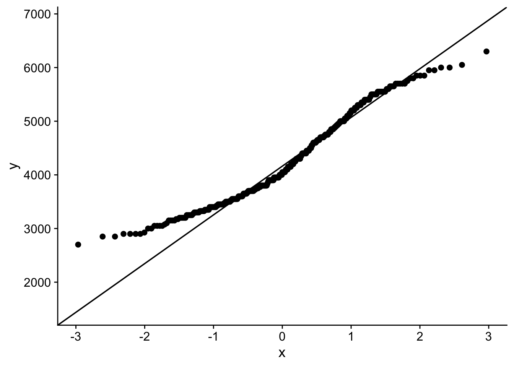
Hmmm…
Shapiro-Wilk body mass
p |>
shapiro_test(??) That does not look normal!
Penguin body mass by species?
Distribution
ggplot(data = p,
aes(x = body_mass_g, color = species)) +
geom_density() +
theme_cowplot()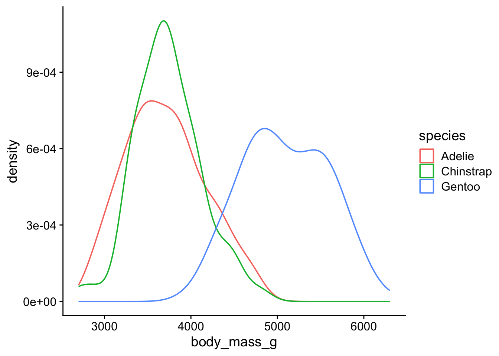
QQ-plot body weight
ggplot(data = p,
aes(sample = body_mass_g, color = species)) +
geom_qq() +
geom_qq_line() +
theme_cowplot()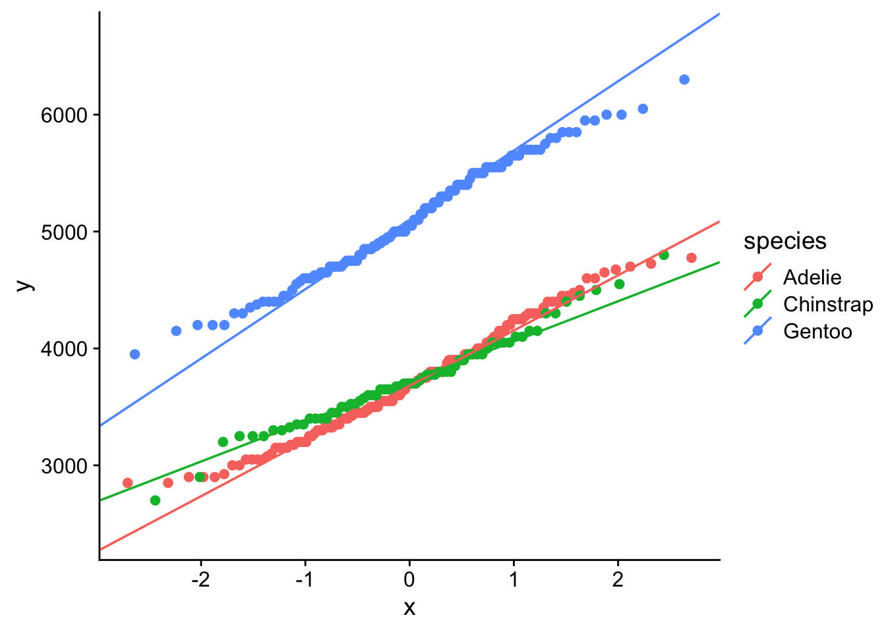
That looks better…
Shapiro-Wilk body weight by species
p |>
group_by(??) |>
shapiro_test(??) Ok so Chinstrap and Gentoo look normal. Not sure about Adelie. We may want to consider using non-parametric test to compare mean body weights between Adelie vs Chinstrap or Gentoo.
Central limit theorem
The central limit theorem states that if you take sufficiently large samples from a population, the samples’ means will be normally distributed, even if the population isn’t normally distributed.
Back to coin flips!! 50 flips, one round.
flip distributions
Look at the distribution of fair flips
ggplot(data = f |> filter(cheating=="fair"),
aes(x=flips)
) +
geom_histogram() +
theme_cowplot()`stat_bin()` using `bins = 30`. Pick better value with `binwidth`.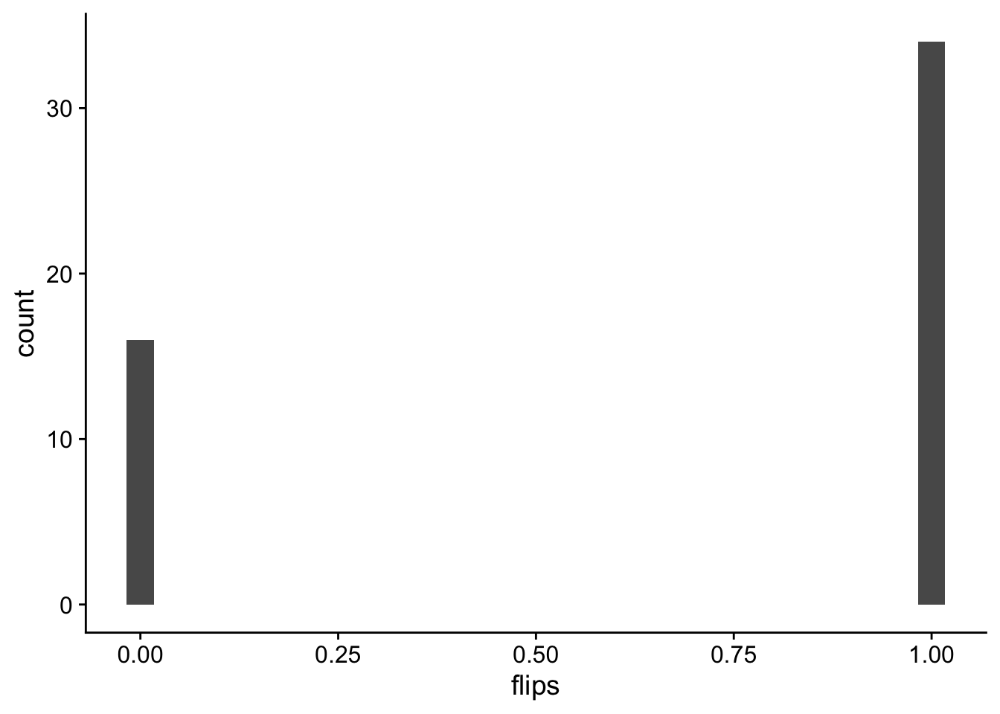
Look at the distribution of unfair flips
ggplot(data = f |> filter(cheating=="unfair"),
aes(x=flips)
) +
geom_histogram() +
theme_cowplot()`stat_bin()` using `bins = 30`. Pick better value with `binwidth`.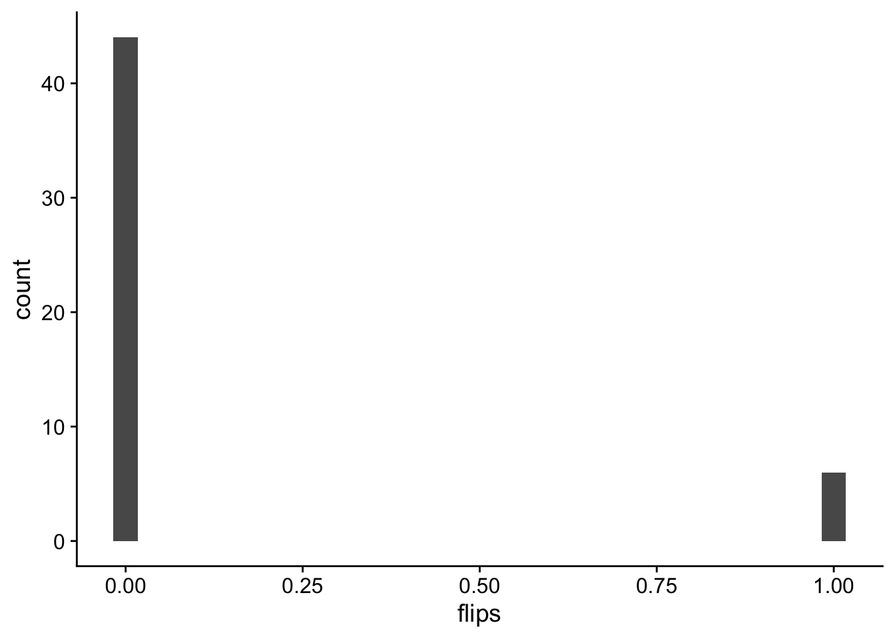
Now lets sample means
let’s do 100 round of 50 flips and take the average of each round.
remember the size that i told you to ignore last class!
r <- 100
rbinom(n = n, size = r, prob = .5)/r [1] 0.45 0.57 0.44 0.40 0.54 0.56 0.55 0.48 0.56 0.42 0.49 0.47 0.55 0.49 0.41
[16] 0.47 0.48 0.55 0.57 0.40 0.48 0.53 0.48 0.48 0.54 0.57 0.53 0.51 0.44 0.45
[31] 0.51 0.51 0.53 0.47 0.49 0.43 0.53 0.54 0.54 0.63 0.41 0.61 0.51 0.45 0.46
[46] 0.55 0.45 0.54 0.47 0.49sampled flip mean distributions
Look at the distribution of fair flips
ggplot(data = fmean |> filter(cheating=="fair"),
aes(x=flips)
) +
geom_density() +
geom_vline(xintercept = .5) +
xlim(0,1) +
theme_cowplot()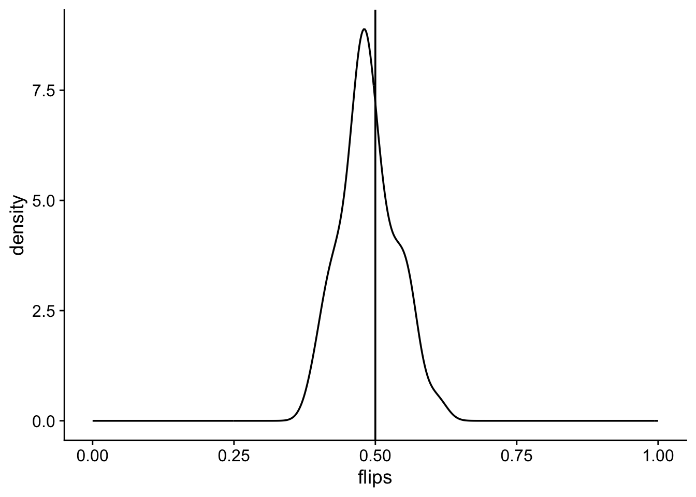
Look at the distribution of unfair flips
ggplot(data = fmean |> filter(cheating=="unfair"),
aes(x=flips)
) +
geom_density() +
geom_vline(xintercept = .2) +
xlim(0,1) +
theme_cowplot()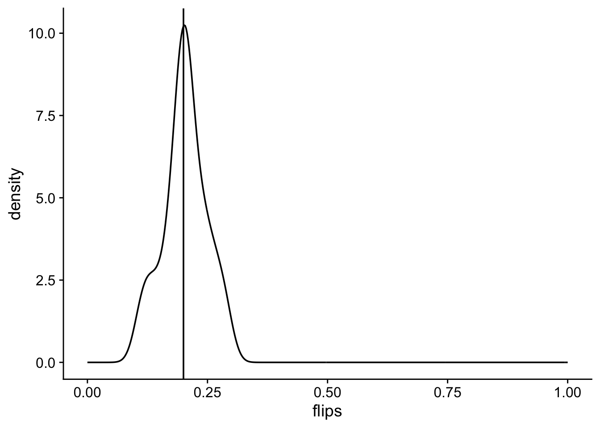
but is it normal?
fmean |>
group_by(cheating) |>
shapiro_test(flips)# A tibble: 2 × 4
cheating variable statistic p
<chr> <chr> <dbl> <dbl>
1 fair flips 0.961 0.0949
2 unfair flips 0.960 0.0882yup!
What about the mean + sd with different parameters?
10 fair and unfair flips
20 and 80 times
put it all together
all <- bind_rows(fair10, unfair10) |>
pivot_longer(cols = c("r20","r80"),
names_to = "r",
values_to = "f"
)Visualize
ggplot(all , aes(x=r, y=f, color=r)) +
geom_jitter() +
stat_summary(fun.y=mean, geom="point", shape=18,
size=3, color="black") +
ylim(-0.05,1.05) +
facet_grid(~type) +
geom_hline(yintercept = .5, linetype = "dashed") +
geom_hline(yintercept = .2, linetype = "dashed") +
theme_cowplot()Warning: The `fun.y` argument of `stat_summary()` is deprecated as of ggplot2 3.3.0.
ℹ Please use the `fun` argument instead.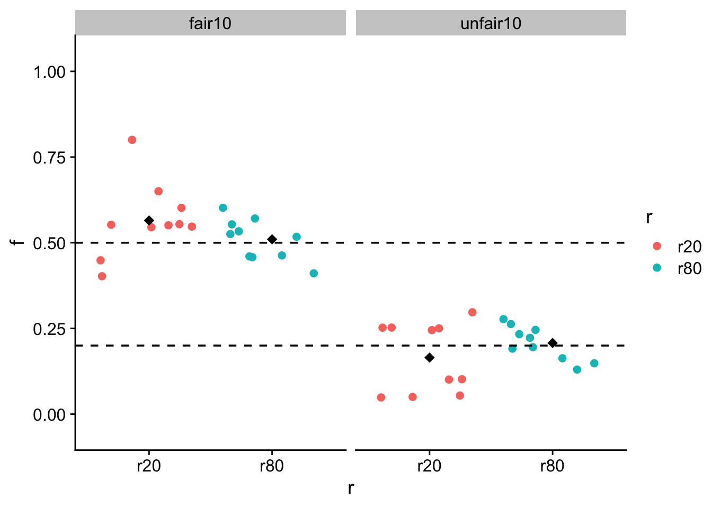
. . .
all |>
group_by(type,r) |>
get_summary_stats(show = c("mean","sd"))# A tibble: 4 × 6
type r variable n mean sd
<chr> <chr> <fct> <dbl> <dbl> <dbl>
1 fair10 r20 f 10 0.535 0.1
2 fair10 r80 f 10 0.527 0.059
3 unfair10 r20 f 10 0.205 0.09
4 unfair10 r80 f 10 0.206 0.049